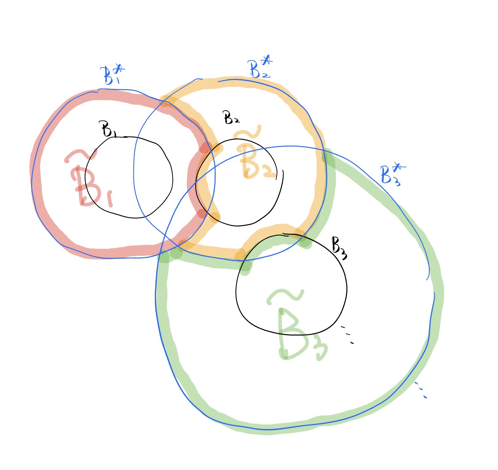

Note of Harmonic Analysis by Stein
ch.1 s.3 Covering Lemmas and the Maximal Function
\[ \newcommand{\R}{\mathbb{R}} \newcommand{\N}{\mathbb{N}} \newcommand{\Z}{\mathbb{Z}} \newcommand{\diam}{\mathrm{diam}} \newcommand{\dist}{\mathrm{dist}} \newcommand{\eps}{\varepsilon} \newcommand{\norm}[1]{\left\|#1\right\|} \newcommand{\fint}{\mathop{\rlap{-}\!\!\int}} \]
1 Recall
Postulates: In \(\R^n\), equipred with Euclidean topology. Given Radon measure \(\mu\) with \(\mu(\R^n)>0\). For each \(x\), denote \(\{B_\delta(x)\}\) a serier of nonempty open bounded sets, parameterized by \(\delta\in(0,\infty)\), called “balls” with “center” \(x\) and “radius” \(\delta\). We need following postulates:
(0) (monotonicity w.r.t. \(\delta\)) \(B_\delta(x)\subset B_{\delta'}(x)\), \(\forall \delta<\delta'\).
(1) (engulfing property) \(\exists C_1>1\), s.t. \(B_\delta(x)\cap B_{\delta}(y)\neq\varnothing\Rightarrow B_\delta(y)\subset B_{C_1\delta}(x)\).
(2) (doubling property) \(\exists C_2>0\), s.t. \(\mu(B_{C_1\delta}(x))\le C_2\mu(B_\delta(x))\).
(1,2)’ (weaker version of (1)+(2)) For each ball \(B=B_\delta(x)\), define \[B^*:=\bigcup_{\substack{\text{$B'\cap B\ne\varnothing$\\$B'$ with radius of $\delta$}}}B'.\] Then \(\exists C_2 > 0\), s.t. \(\mu(B^*_\delta(x))\le C_2\mu(B_\delta(x))\).
(3) \(\bigcap_{\delta>0}\bar B_\delta(x)=\{x\}\), \(\bigcup_{\delta>0}B_\delta(x)=\R^n\).
(4) \(\forall\) open set \(U\), \(\forall \delta>0\), function \(x\mapsto \mu(B_\delta(x)\cap U)\in C^0\).
2 Vitali Covering Lemma
Lemma 1 (finite Vitali covering lemma) Under the postulates (0), (1,2)’. \(E\): \(\mu\)-measurable, \(E\subset\bigcup_{i=1}^n B_i\), \(B_i\): balls. Then \(\exists\) disjoint subcollection \(\{B_{i_k}\}_{k=1}^m\) s.t. \[\sum_{k=1}^m\mu(B_{i_k})\ge\frac1 {C_2}\mu(E).\]
Proof. Pick subcollection, still denoted by \(\{B_k\}_{k=1}^\infty\), by the following picking rule:
\(\bullet\) Let \(B_1\) be a ball of the origin collection of maximal radius.
\(\bullet\) Next choose \(B_2\) to have maximal radius among the subcollection of balls disjoint with \(B_1\).
\(\bullet\) We continue this process until we can go no further.
Obviousely, \(\{B_k\}\) picked by above process is disjoint. And it’s enough to prove \[E\subset\bigcup_k B_{k}^*\] (why?) If it holds, then by (1,2)’’ \[\mu(E) \le \sum_{k}\mu(B^*_k) \le \sum_{k}C_2\mu(B_k).\] , where \(B^*\) defined as (1,2)’.
\(\forall x\in E\), if \(x\) in some \(B_k\), done; if not, then \(x\) in a ball \(B_x=B_{\delta_x}(z_x)\) not added into \(\{B_k\}\). Pick ball \(B_k=B_{\delta_k}(z_k)\) to have maximal radius among the subcollection intersect with \(B_x\). We have \(\delta_x\le\delta_k\) (why?) If \(\delta_x>\delta_k\), then every ball having bigger radius than \(B_{\delta_x}(z_x)\) is disjoint with \(B_{\delta_x}(z_x)\). Hence \(B_{\delta_x}(z_x)\) should be added into \(\{B_k\}\), contradiction. . Combine with (0) and definition of \(B_k^*\), \(x\in B_k^*\) (why?) By (0), \(B_{\delta_x}(z_x)\subset B_{\delta_k}(z_x)\). By the definition of \(B^*_k\), \(B_{\delta_k}(z_x)\) has the same radius with \(B_{\delta_k}(z_k)\), \(B_{\delta_k}(z_k)\cap B_{\delta_k}(z_k)\ne\varnothing\). So \(x\in B_{\delta_x}(z_x)\subset B_{\delta_k}(z_x)\subset B^*_{\delta_k}(z_k)\). ,done. \(\square\)
3 Maximum Function
Definition 1 (average, maximal function, uncentered maximal function) \[A_\delta(f)(x):=\frac{1}{\mu(B_{\delta}(x))}\int_{B_{\delta}(x)} f.\] \[M(f)(x):=\sup_{\delta>0} A_\delta(|f|)(x)=\sup_{\delta>0}\frac{1}{\mu(B_{\delta}(x))}\int_{B_{\delta}(x)}|f|.\] \[\tilde{M}(f)(x):=\sup_{B\ni x} \frac{1}{\mu(B)}\int_B |f|.\]
We have
\(M(f)\le\tilde{M}(f).\)
If (1)+(2) hold, then \(\tilde{M}(f)(x)\le C_2M(f)(x).\) (pf) \(\forall B=B_{\delta}(z)\ni x\). \(\because B_{\delta}(z)\cap B_{\delta}(x)\ne\varnothing\), by (1),\(B_{\delta}(z)\subset B_{C_1\delta}(x).\) By (2) \[\begin{align*} \frac 1{\mu(B)}\int_B|f| & \le \frac 1{\mu(B)}\int_{B_{C_1\delta}(x)}|f| \\ & \le C_2 \frac 1{\mu(B_{C_1\delta}(x))}\int_{B_{C_1\delta}(x)}|f| \\ & \le C_2 \tilde M(f)(x). \end{align*}\] Take \(\sup_{B\ni x}\), done. \(\square\)
\(\tilde{M}(f)\): l.s.c. (inverse image of \((a,\infty]\) is open). (pf) \(E_\alpha:=\{\tilde M(f)>\alpha\}\). \(\forall x\in E_\alpha\), \(\exists\) open ball \(B\ni x\), s.t. \(\frac1{\mu(B)}\int_B|f|>\alpha\). Then $x’B, \(\tilde M(f)(x')\ge \frac1{\mu(B)}\int_B|f|>\alpha\), that shows \(B\subset E_a\). Hence \(E_\alpha\): open.
Theorem 1 (properties of the maximal function) Under the postulates (0)+(1,2)’, we have
\(f\in L^p(d\mu)\), \(1\le p\le\infty\), then \(M(f)<\infty\), a.e..
\(f\in L^1(d\mu)\), then \[\mu(\{M(f)>\alpha\})\le \frac{C_2}{\alpha}\int|f|, \quad \forall\alpha>0.\]
\(f\in L^p(d\mu)\), \(1<p\le\infty\), then \(M(f)\in L^p(d\mu)\) and \[\norm{M(f)}_p\le C_p\norm{f}_p,\quad \text{where $C_p$ depends on $C_2,p$}.\]
Proof. Prove 2: \(E_\alpha := \{\tilde M(f)>\alpha\}\). Pick \(\forall\) compact \(K\subset E_\alpha\). Then \(\forall x\in K\), \(\exists\) ball \(B_x\ni x\), s.t. \[\begin{align*}
\frac{1}{\mu(B_x)}\int_{B_x}|f|>\alpha.
\end{align*}\] Select a finite cover \(\{B_{i}\}_{i=1}^n\) of \(K\). By finite Vitali covering lemma, select a disjoint subcover \(\{B_{i_k}\}_{k=1}^m\), s.t. \[\begin{align*}
\mu(K)
\le C_2\sum_{k=1}^m\mu(B_{i_k})
<\frac{C_2}{\alpha}\sum_{k=1}^m\int_{B_{i_k}}|f|
\le \frac{C_2}{\alpha}\int|f|.
\end{align*}\] Take \(\sup\limits_{\substack{\text{$K$:compact\\$K\subset E$}}}\) (note) \(\because \tilde{M}(f)\): l.s.c., \(E_\alpha\): open. \(\therefore\) we can use the inner regularity property of Radon measure \(\mu\): \[\mu(E)=\sup_{\substack{\text{$K$:compact\\$K\subset E$}}}\mu(K),\quad \forall E\text{: open}.\] , done.
Prove 3: When \(p=\infty\) easy to prove (really?) If \(f\in L^\infty\), then \(\forall x\in\R^n\) \[M(f)(x)\le \tilde{M}(f)(x)=\sup_{B\ni x}\frac{1}{\mu(B)}\int_{B}|f|\,d\mu\le \|f\|_{L^\infty}.\] . Only consider \(1 < p < \infty\), cut-off: \[\tilde{f}:=\begin{cases}
f,\quad & |f|>\frac\alpha 2 \\
0,\quad & |f|\le\frac\alpha 2
\end{cases}\in L^1.\] We have \(\tilde M(f)\le \tilde M(\tilde{f})+\frac\alpha 2\) (why?) \(\because f\le\tilde{f}+\frac\alpha 2\), \(\therefore\tilde M(f)\le \tilde M(\tilde{f}+\frac\alpha 2)=\tilde M(\tilde{f})+\frac\alpha 2\). . Then \(\{\tilde M(f)>\alpha\}\subset\{\tilde M(\tilde{f})>\frac\alpha 2\}\) (why?) \(\because \tilde M(f)>\alpha\implies \tilde M(\tilde{f})+\frac\alpha 2>\alpha\implies \tilde M(\tilde{f})>\frac\alpha 2\). . By conclusion 2 \[\begin{align*}
\mu(\{\tilde M(f)>\alpha\})
\le \mu\left(\left\{\tilde M(\tilde{f})>\frac\alpha 2\right\}\right)
\le \frac{2C_2}{\alpha}\int|\tilde{f}|
= \frac{2C_2}{\alpha}\int_{\{|f|>\frac\alpha 2\}}|f|.
\end{align*}\] Combine with the layer-cake representation (note) (layer-cake representation) \(\forall f>0\), \(f\): \(\mu\)-measurable, \(\forall p>0\), we have \[\int f^p\,d\mu=p\int_0^\infty \alpha^{p-1}\mu(\{f>\alpha\})\,d\alpha.\] This equation allows \(f\not\in L^p\), i.e. allow both sides to be \(\infty\). . We have, for \(1 < p < \infty\), \[\begin{align*}
\int \tilde M(f)^p
& =p\int_0^\infty \alpha^{p-1}\mu(\{\tilde M(f)>\alpha\})\,d\alpha \\
& \le p\int_0^\infty \alpha^{p-1}\frac{2C_2}{\alpha}\int_{\{|f|>\frac\alpha 2\}}|f|\,d\mu\,d\alpha \\
& =2pC_2\int_{\R^n} |f| \int_0^{2|f|}\alpha^{p-2}\,d\alpha\,d\mu \\
& =\frac{2^p p C_2}{p-1}\int |f|^p\,d\mu.
\end{align*}\] Combine with \(M(f)\le \tilde M(f)\), done.
Peove 1: For \(1 < p\le\infty\), by conclusion 3, we have \(\|\tilde M(f)\|_p<\infty\). Hence \(M(f)<\infty\), a.e.. For \(p=1\), let \(\alpha\) in conclusion 2 goes to \(\infty\), done. \(\square\)
Remark 1. Conclusion 3 is fause for \(p=1\). For example, let \(f=\boldsymbol{1}_{[0,1]}\), then \(M(f)(x)\sim \frac{1}{|x|}\) as \(|x|\to\infty\), hence \(M(f)\not\in L^1\). And in the proof of conclusion 3, we find the bound of \(C_p=2\left(\frac{C_2p}{p-1}\right)^{1/p}=O\left(\frac{1}{p-1}\right)\to\infty\), as \(p\to 1^+\).
Corollary 1 Under the postulates (0)+(1,2)’+(3). If \(f\in L^1_{loc}(d\mu)\), then \[\lim_{\delta\to 0} A_\delta (f)(x) = f(x),\quad \text{a.e..}\]
Proof. By (3), \(\lim_{\delta\to0}\diam\, B_{\delta}(x)=0\) (why?) By (0), \(\{\diam\,B_{\delta}(x)\}_{\delta}\searrow\) when \(\delta\searrow 0\). And by (3), \(\bigcap_{\delta}\bar B_{\delta}(x)=\{x\}\). If \(\lim_{\delta\to0}\diam\, B_{\delta}(x)=d>0\), then \(\exists \{y_\delta\}_\delta\), s.t. \(y_\delta\in B_{\delta}(x)\) and \(|y_\delta-x|\ge d/2\). \(\because \bar B_{\delta}(x)\): compact, \(\exists\) subsequence \(y_{\delta_k}\to y\in\bigcap_{\delta}\bar B_{\delta}(x)\) (why?) Obviously, \(y\in\bigcap_{k=0}^\infty \bar B_{\delta_k}(x)\) and \(\delta_k\to 0\). Hence \(\forall \delta\), \(\exists \delta_k<\delta\), \(\therefore\) \(y\in \bar B_{\delta_k}(x)\subset\bar B_{\delta}(x)\). \(=\{x\}\), but \(|y-x|\ge d/2>0\), contradiction. . Hence we can prove the proposition in case \(f\in C^0\) easily (really?) \(\forall x\), we have \[\begin{align*} |A_\delta(f)(x)-f(x)| & \le\frac{1}{\mu(B_{\delta}(x))}\int_{B_{\delta}(x)}|f(y)-f(x)|\,dy \\ & \le \sup_{y\in B_{\delta}(x)}|f(y)-f(x)| \\ & \le \sup_{y\in B_{\delta}(x)}\eps(|y-x|) \\ & \le \eps(\diam\,B_{\delta}(x))\to 0, \quad \delta\to 0. \end{align*}\] . In general case \(f\in L^1_{loc}\), \(f\in L^1(B_\delta(x))\) for any fixed \(B_\delta(x)\). Then \(\exists g\in C_c^0(B_\delta(x))\) such that \(\|f-g\|_{1}<\eps\) (note) \(X\): LCH space, \(\mu\): Radon measure. For \(1\le p < \infty\), \(C_c^0(X)\) is dense in \(L^p(d\mu)\). . Hence \[\begin{align*} |A_\delta(f)(x)-f(x)| & \le |A_\delta(f-g)(x)| + |A_\delta(g)(x)-g(x)| + |g(x)-f(x)| \\ & \le M(f-g)(x) + |A_\delta(g)(x)-g(x)| + |(f-g)(x)|. \end{align*}\] Take \(\varlimsup_{\delta\to 0}\), \[\varlimsup_{\delta\to 0}|A_\delta(f)(x)-f(x)|\le M(f-g)(x) + |(f-g)(x)|. \] Hence \(\forall\alpha>0\) fixed, \[\{l.h.s.>\alpha\}\subset\left\{M(f-g)>\frac\alpha 2\right\}\cup\left\{(f-g)>\frac\alpha 2\right\}.\] \[\begin{align*} \mu(\{l.h.s.>\alpha\}) & \le \mu\left(\left\{M(f-g)>\frac\alpha 2\right\}\right)+\mu\left(\left\{(f-g)>\frac\alpha 2\right\}\right) \\ & \le \frac{2C_2}{\alpha}\|f-g\|_1+\frac{2}{\alpha}\|f-g\|_1 \le \frac{2(C_2+1)}{\alpha}\eps \end{align*}\] (why the second inequality?) The first term use the conclusion 2 of Theorem 1. The second term use the Chebyshev’s inequality: \(\forall f>0\), \(f\): \(\mu\)-mearsurable, we have \[\alpha\mu(\{f>(\ge)\alpha\})\le\int f\,d\mu\] . By arbitrariness of \(\eps\), \[\mu\left(\left\{\varlimsup_{\delta\to 0}|A_\delta(f)-f|>\alpha\right\}\right)=0,\quad\forall\alpha>0.\] Therefore \[\mu\left(\left\{\varlimsup_{\delta\to 0}|A_\delta(f)-f|>0\right\}\right)=0\] (why?) \[\begin{align*} \mu\left(\left\{\varlimsup_{\delta\to 0}|A_\delta(f)-f|>0\right\}\right) & =\mu\left(\bigcup_\alpha \left\{\varlimsup_{\delta\to 0}|A_\delta(f)-f|>\alpha\right\}\right) \\ & =\lim_{\alpha\to 0}\mu\left(\left\{\varlimsup_{\delta\to 0}|A_\delta(f)-f|>\alpha\right\}\right) \\ & =\lim_{\alpha\to 0} 0=0. \end{align*}\] . Done. \(\square\)
4 Whitney Covering Lemma
Introduce:
Lemma 2 ((traditional) Whiteney covering lemma) Given open set \(\varnothing\ne E\subsetneq\R^n\). \(\exists\) open cubes \(\{Q_k\}_{k=1}^\infty\), s.t.
\(\{Q_k\}_{k=1}^\infty\): pairwise disjoint.
\(\bigcup_{k}\bar Q_k=E\).
size of each cube is comparable to its distance from \(E^c\), i.e. \(\exists C=C(n)\), s.t. \[\frac1C\diam\,Q_k\le \dist(Q_k,E^c)\le C\diam\,Q_k,\quad \forall k.\]
In the general setting of balls instead of cubes, we give the following not quite elegant one:
Lemma 3 ((balls version) Whiteney covering lemma) Under the postulates (0)+(1)+(3). Given open set \(\varnothing\ne E\subsetneq\R^n\). \(\exists\) balls \(\{B_k\}_{k=1}^\infty\), s.t.
\(\{B_k\}_{k=1}^\infty\): pairwise disjoint.
\(\bigcup_{k}B_k^*=E\).
\(B_k^{**}\cap E^c\ne\varnothing\), \(\forall k\).
where for \(B=B_\delta(x)\), define \(B^*:=B_{C^*\delta}(x)\), \(B^{**}:=B_{C^{**}\delta}(x)\), \(C^*\), \(C^{**}\) are constants depend only on \(C_1\) in postulate (1) with \(1<C^*<C^{**}\).
Proof. \(\eps>0\): sufficiently small constant (in fact \(\eps\le\frac1 {C_1}\)). Define a collection of balls \[\mathcal B:= \{B_{\eps\delta_x}(x)\}_{x\in E},\quad \text{where $\delta_x:=\sup\{\delta:B_\delta(x)\subset E\}$},\] (note) By (3), \(0<\delta_x<\infty\), \(\forall x\in E\). . Constuct desired balls: select a maximal disjoint subcollection of \(\mathcal B\), denoted by \[\mathcal B':=\{B_k=B_{\eps\delta_k}(x_k)\}_{k=1}^\infty.\] Pick \(C^{**}>\frac{1}{\eps}\), \(C^* < C^{**}\): to be decided. Obviously, \(\mathcal B'\) satisfies conclusion 1 and 3. What remains is conclusion 2. It’s enough to just show \(\bigcup_k B^*_k\supset E\). \(\forall x\in E\), if \(B_{\eps\delta_x}(x)\in\mathcal B'\), done; if not, then by the maximaltity of \(\mathcal B'\), \(\exists B_k=B_{\eps\delta_k}(x_k)\), s.t. \[B_{\eps\delta_k}(x_k)\cap B_{\eps\delta_x}(x)\ne \varnothing.\] \(\because \eps\) small enough, we can enlarge their radii to \(\forall R\ge\max\{\eps\delta_x,\eps\delta_k\}\). Then \(B_{R}(x_k)\cap B_{R}(x)\ne \varnothing\). By (1), \[B_R(x_k)\subset B_{C_1R}(x),\quad \forall R\ge\max\{\eps\delta_x,\eps\delta_k\}.\] Hence we claim that: if we further let enlarge factor \(R>\delta_k\) (we can always do this), then \(C_1R\ge\delta_x\), because when \(C_1R<\delta_x\), there is a contradiction (why?) \(\because\) in that case, \(B_R(x_k)\cap E^c\ne\varnothing\) and \(B_R(x_k)\subset B_{C_1R}(x)\subset B_{\delta_x}(x)\subset E\). It’s impossiable. . Because the above claim holds for \(\forall R\), thus \(\delta_k\ge\delta_x/C_1\). So use (0), (1) and \(B_{\eps\delta_k}(x_k)\cap B_{\eps\delta_x}(x)\ne \varnothing\), we have \[x\in B_{\eps\delta_x}(x)\subset B_{\eps C_1\delta_k}(x)\subset B_{\eps C_1^2\delta_k}(x_k)\] (note) Why must here use \(x\in B_{\eps\delta_x}(x)\)? In fact, \(x\in\) any ball with center \(x\). But for smaller radius, we’re not sure whether have \(B_{\eps\delta_k}(x_k)\cap B_{\eps\delta_x}(x)\ne \varnothing\). So here use \(x\in B_{\eps\delta_x}(x)\) is the best choice. . \(\because\eps\) small enough, it’s easy to let \(\eps C_1^2\le C^*\). So we let \(C^*\in[\eps C_1^2,\frac1\eps]\) is ok. \(\square\)
Remark 2. Conclusion 3 cannot be replaced by “\(B_k^{**}\cap\partial E\ne\varnothing\)”. Because \(B_k^{**}\) may not connected. It may touch \(E\) and \(E^c\) at same time but not touch \(\partial E\).
Remark 3. From above lemma, we can pick sets \(\{\tilde{B}_k\}_{k=1}^\infty\) s.t. \(\{\tilde B_k\}_{k=1}^\infty\): pairwise disjoint, \(\bigcup_k \tilde B_k=E\) and \(B_k\subset\tilde B_k\subset B^*_k\). For example, \[\tilde B_k:=B^*_k-\left(\bigcup_{j<k}\tilde B_j\right)-\left(\bigcup_{j>k}B_k\right).\]
